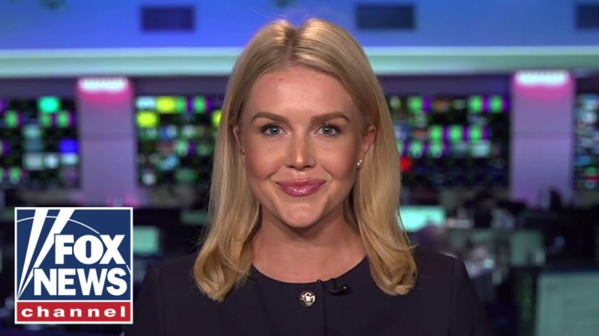

【白宫发言人莱维特透露特朗普与马斯克公开争执后的关系现状】
Summary: Leavitt reveals status of Trump-Musk relationship after public feud
摘要： 莱维特透露特朗普与马斯克公开争执后的关系现状

⏱️ Estimated Reading Time: 9 min
📚 高考3500生词 📚 雅思生词 📚 托福生词 📚 GRE生词 📚 UP主推荐生词
Here with reaction. It's time for our White House briefing with the White House press secretary, Caroline Levit.
现场反应报道。现在是白宫新闻秘书卡罗琳·莱维特的白宫简报时间。
Um, you know, I shouldn't admit all this.
嗯，你知道，我不该承认这些。
There's a part of me, I grew up playing hockey, and there wasn't a single day that we played hockey or basketball or football or baseball, whatever we were playing, where we didn't fight, and then we'd fight, then we'd become friends again.
我从小打曲棍球，无论是打曲棍球、篮球、橄榄球还是棒球，没有一天我们不打架，打完架又和好。
Um, it when you're dealing with two very powerful men and a week, less than a week ago, they were, you know, best friends.
当你面对两位非常有权势的人，而不到一周前他们还是最好的朋友。
uh got personal very quick.
争执很快变得私人化。
Uh but really what we're dealing with here my from my point of view is just a major policy difference which they acknowledged in that in that very friendly press conference.
但在我看来，这只是一次重大政策分歧，他们在友好的新闻发布会上也承认了这一点。
That's right, Sean.
没错，肖恩。
And tonight, the president's focus and the focus of the entire White House remains on passing the one big beautiful bill.
今晚，总统和整个白宫的重点仍然是推动通过这项“宏伟法案”。
And as your audience just saw on Friday, just days ago, the president graciously hosted Elon Musk in the Oval Office.
正如观众上周五所见，几天前总统在椭圆形办公室热情接待了埃隆·马斯克。
And Elon thanked the president for his incredible leadership to c cut waste, fraud, and abuse in our government, which this one big beautiful bill does.
马斯克感谢总统在削减政府浪费、欺诈和滥用方面的卓越领导力，这正是这项法案的目标。
So the only difference between Friday and today is Elon went back to his companies and as a businessman, he has a right to speak for his companies.
周五和今天的唯一区别是马斯克回到公司，作为商人，他有权代表公司发声。
But as president, President Trump has a responsibility to fight for this country.
但作为总统，特朗普有责任为这个国家而战。
And the one big beautiful bill is the most historic piece of legislation that has moved through Capitol Hill in modern-day history.
这项“宏伟法案”是现代史上通过国会的最具历史意义的立法。
Not only does this bill provide the largest tax cut for middle class and workingclass families, it extends the Trump tax cuts in 2017, it also delivers on President Trump's key campaign promises that he went around the country and spoke to voters across the country about to huge applause.
该法案不仅为中产阶级和工薪家庭提供最大减税，延续2017年特朗普减税政策，还兑现了特朗普总统在全国巡回演讲中对选民的关键承诺，赢得热烈掌声。
No tax on tips for our service workers.
服务人员的小费免税。
No tax on overtime for our law enforcement officers who are putting in extra work uh having details to put food on the table.
执法人员的加班收入免税，他们加班是为了养家糊口。
The Fraternal Order of the Police was at the White House today endorsing this piece of legislation specifically because of the no tax on overtime provision.
警察兄弟会今天到白宫支持该法案，正是因为加班免税条款。
This bill also effectively eliminates a tax on social security for our hardworking seniors.
该法案还实质取消了勤劳老年人的社保税。
And not only that, it provides huge savings for the American taxpayers.
不仅如此，它还为美国纳税人节省了巨额开支。
$1.6 trillion in savings.
节省1.6万亿美元。
We can't solve our nation's decades old debt crisis overnight.
我们无法一夜解决国家数十年的债务危机。
President Trump is practical and realistic about that.
特朗普总统对此务实而现实。
But this bill is a huge monumental step in the right direction.
但该法案是朝着正确方向迈出的历史性一步。
And it also provides critical funding for border security.
它还提供了边境安全的关键资金。
It will hire more ICE and border patrol agents across the country, which we desperately need to carry out the mass deportation effort that is underway.
将增聘更多移民海关执法局和边境巡逻人员，这是当前大规模驱逐行动急需的。
And this bill also provides critical infrastructure for our national security and funding for the Golden Dome, which is another signature campaign promise of President Trump's.
该法案还为国家安全提供关键基础设施资金，包括“金色穹顶”项目，这是特朗普总统的另一项标志性竞选承诺。
Look, President Trump is the unequivocal leader of the Republican party, and this bill is going to pass.
特朗普总统是共和党当之无愧的领袖，该法案必将通过。
President was very positive on his call with Chinese President Xi uh earlier today where they discussed almost for 90 minutes mostly about trade.
总统今天早些时候与中国国家主席习近平的通话非常积极，近90分钟主要讨论贸易。
Um I think that's good for both countries.
我认为这对两国都有利。
I've always known we'd get to this point.
我一直知道我们会走到这一步。
I've always believed that China will need access to our markets and it's in everybody's best interest to come to a deal.
我一直相信中国需要进入我们的市场，达成协议符合各方利益。
Uh can you give give us any insight into that phone call?
能否透露通话细节？
Well, sure.
当然。
As the president said on Truth Social and also discussed in the Oval Office today, this was a good productive call and he has always enjoyed a respectful relationship with China's president.
正如总统在Truth Social所说，今天在椭圆形办公室也提到，这是一次富有成效的通话，他始终与中国主席保持相互尊重的关系。
uh and China needs the United States of America in our markets.
中国需要美国市场。
And we also uh have a strategic interest in China's economy and market as well.
我们对中国经济和市场也有战略利益。
And so that's why both leaders decided today that their trade officials will continue to meet to discuss this important bilateral relationship.
因此两位领导人决定让贸易官员继续会晤讨论这一重要双边关系。
Let me ask you about the judge blocking this Colorado terrorist family and the deportation that was to take place and the travel ban uh that the president put in place yesterday.
请问法官阻止科罗拉多恐怖分子家庭驱逐及总统昨日实施的旅行禁令一事。
Well, this is just another rogue decision by a rogue judge who is trying to be I don't know the president of the United States, the secretary of state, the secretary of homeland security.
这又是一项越权裁决，这位法官试图扮演——我不知道——美国总统、国务卿或国土安全部长的角色。
Surely these important matters of both homeland security and national security do not belong to lower district local judges in in these districts across the country.
这些国土安全和国家安全的重大事务显然不属于全国各地地方法院的低级法官管辖。
Uh they are trying to block the deportation of a terrorist family who has been illegally present in the interior of our country.
他们试图阻止驱逐非法滞留我国境内的恐怖分子家庭。
Uh, and we also have a judge, as you know, Sean, who tried to block the deportation of illegal immigrant rapists and murderers to the country of South Sudan.
还有一位法官，肖恩，你也知道，试图阻止将非法移民强奸犯和杀人犯驱逐至南苏丹。
And so now those illegal immigrants, those rapists, those murderers, those brutal criminals are sitting in Djibouti and ICE agents have been forced to stay on the ground in a very dangerous part of the world to oversee the care of these illegal criminals and migrants because a lower district court judge said that they have to.
现在这些非法移民、强奸犯、杀人犯和暴徒滞留在吉布提，移民海关执法人员被迫留在世界上非常危险的地区监管这些非法罪犯和移民，就因为地方法院法官的命令。
Lower district court judges do not get to dictate the foreign policy and the national security interests of the United States of America.
地方法院法官无权决定美国的外交政策和国家安全利益。
We can't run a country if the executive is not allowed to freely exercise its powers.
如果行政部门不能自由行使权力，国家就无法运转。
And that's what we're seeing take place.
这正是我们目睹的情况。
President Trump is uh no is not shy of lawfare though.
不过特朗普总统并不畏惧法律战。
It is something that he has faced throughout the entirety of his political career.
这是他整个政治生涯中一直面对的。
So the Trump administration is fully prepared to fight these battles in court.
特朗普政府已做好在法庭上抗争的准备。
We will win on the merits of the law and we know we are winning in the court of public opinion.
我们将在法律层面获胜，也深知在舆论法庭上占据优势。
The American people overwhelmingly support the deportation of illegal criminals and especially known terrorists like the one who put uh the the terrible um terrorist attack in Boulder, Colorado on full display on Monday.
美国人民压倒性支持驱逐非法罪犯，尤其是像周一在科罗拉多州博尔德制造恐怖袭击的已知恐怖分子。
All right.
好的。
Well, that's our White House briefing.
以上就是今天的白宫简报。
Caroline Levit, we always appreciate you being with us.
卡罗琳·莱维特，感谢你的参与。
Thank you so much.
非常感谢。
Hey, Sean Hannity here.
我是肖恩·汉尼提。
Hey, click here to subscribe to Fox News YouTube page and catch our hottest interviews and most compelling analysis.
点击订阅福克斯新闻YouTube频道，获取最热门访谈和精彩分析。
You will not get it anywhere else.
其他平台无法提供。